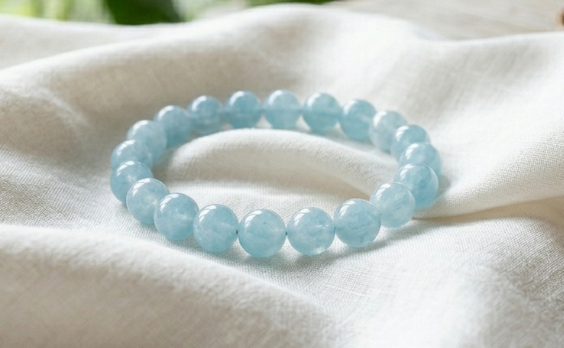
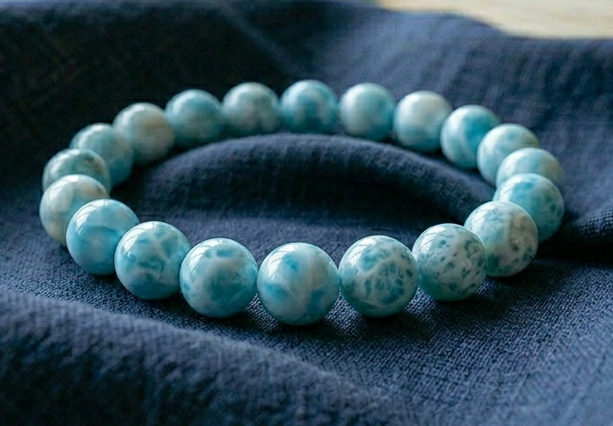

はなかっぱ様
詳細のご希望、ありがとうございます。
はなかっぱ様のために選んだ石について、
詳しくお伝えしますね。
はなかっぱ様の命の流れを視させていただき、
今のはなかっぱ様に最も必要な石を
3つ選びました。
はなかっぱ様は、
人の表情の曇りに誰よりも早く気づき、
黙って場を整えられる優しさを
生まれ持った方です。
散らかったものを元の場所へ戻す手の確かさと、
十年の気苦労にも
投げ出さなかった芯の強さがあります。
でも、
話し合いの場で「どうしたい？」と聞かれ、
「みんながいいなら、それで」と
先に答えてしまう。
そして夜、お風呂や布団の中で
言えなかった一言を
何度も言い直している。
ご自分の思いを一番後ろに置いてしまう感覚が
繰り返されやすい流れがあります。
2027年1月に罔象女神の力が満ち、
2月の立春を過ぎた頃から
環境が動き出す流れが、
すでに始まっています。
その流れを最大限に活かすために、
はなかっぱ様のエネルギーと
罔象女神（みつはのめのかみ）が
深く共鳴する3つの石を選びました。

澄んだ水色を宿した、
声を押し出す石です。
はなかっぱ様の、
人の気持ちを汲み取れるやわらかなエネルギーと
最も深く共鳴します。
職場で
「ここで一言添えたい」と思った瞬間に
「私は、こうしたいです」と
言い出すその声を
そっと支えてくれます。

罔象女神と最も共鳴が強い石です。
やさしい水色に白い流れの模様を宿した、
清水の流れのような石です。
はなかっぱ様の命の流れには、
人の変化を汲み上げる力と、
自分の思いを後ろに置く癖が
同居しています。
ラリマーは、罔象女神の守護を日常の中で
ずっとそばに置いておける石です。
言ったあと、
相手の反応に心が揺れそうになる時にも
言葉を引っ込めない落ち着きを
そっと助けてくれます。

月の光を宿した、
見守りの石です。
言えずに飲み込んだ夜、
お風呂や布団の中で
言えなかった一言を何度も言い直しているとき、
そのループを
静かにほどいてくれます。
自分の思いを後ろに置く優しさを止めるのではなく、
言えなかった日も
明日また言えるように、
やわらかな方向へ整えてくれる石です。
アクアマリン・ラリマー・ムーンストーン。
この3つをはなかっぱ様専用に組み合わせて、
一つひとつ手作りで仕上げます。
罔象女神への祈祷と
エネルギーチャージを込めて、
はなかっぱ様のもとへお届けします。
身につけていくうちに、
「私は、こうしたいです」と
先に言える日が
少しずつ増えていきます。
話し合いの場で
言葉を引っ込めそうになる瞬間、
布団の中で
言えなかった一言を言い直している夜。
そういう揺らぎのとき、
石が、そのループをほどくのを
静かに支えてくれます。
日常の中で、守護がそばにある。
そして2027年の立春、
環境が動き出す入口に、
エネルギーを整えて
迎えやすくなります。
はなかっぱ様の場合、
2027年1月に罔象女神の力が最も強く満ち、
2月の立春を過ぎた頃から、
必要とされて楽しく働ける流れが
動き始めます。
パワーストーンのエネルギーが
しっかりと馴染むまでには、
通常2〜3週間ほどかかります。
今から始めることで、
2027年の1月を迎える頃には
エネルギーが馴染んだ状態で
迎えやすくなります。
- ご注文から十日以内にお送りします
- 追跡番号付きで安心
- 専用の浄化・エネルギーチャージ済みでお届けします
今回ご購入いただいた方には：
- パワーストーンの取扱い・浄化方法のご案内
- ご購入から3ヶ月間、気になることがあればいつでもご相談いただけます
ご希望の方は、下のボタンよりお進みください。
ブレスレットを希望する
※ 別ウィンドウで購入ページが開きます
お値段のことは、
どうぞ無理のない範囲で
ご自分のペースで決めてくださいね。
ご不明な点があれば、
お気軽にお尋ねくださいね。
はなかっぱ様が、
「私は、こうしたいです」と
ご自身に許したその瞬間から、
罔象女神の守護が、
はなかっぱ様の優しさと粘り強さを
静かに支え始めます。
どうか、これからは
朝の光がやわらかく差す職場で
ご自分の言葉を最初に置く日々を
迎えてくださいね。